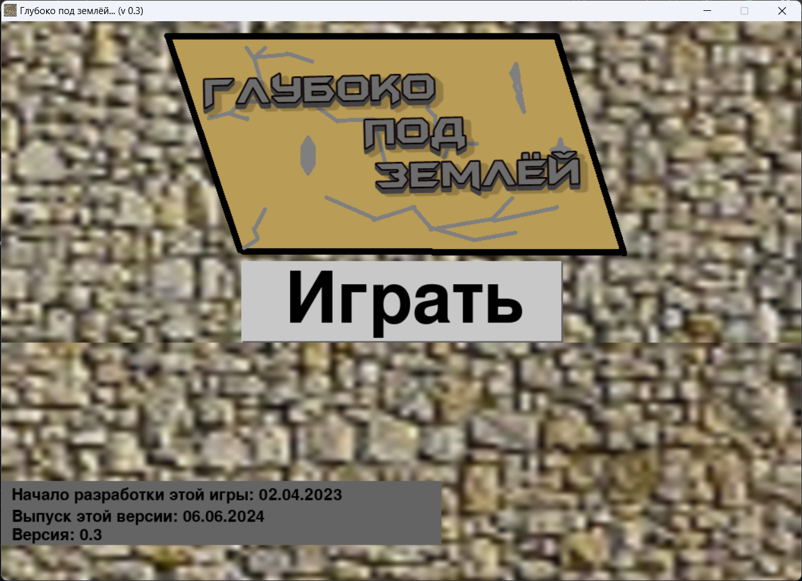

Добро пожаловать на официальный сайт разработчика MrSasha26!
Об игре "Глубоко под землёй..."
"Глубоко под землёй" (версия 0.3) - это в данном случае игра, в которой вы начинаете развиваться в подземелье, в земной коре. Мир в этой игре БЕСКОНЕЧЕН, то есть вы можете бесконечно копаться куда-либо, и никогда не упрётесь в край мира (правда, игра плохо оптимизирована, поэтому играть в мире шириной (и высотой) более около 250-ти блоков вы без лагов не сможете). Копаясь, вы можете наткнуться на загадочные тоннели - шахты. Чем дальше они находятся от спавна, тем они длиннее. С помощью клавиши "F1" можно сохранять карту. С помощью клавищ "1" и "2" вы можете выбирать блок из инвентаря, который вы хотите поставить. С помощью клавиши "ESCAPE" можно вернуться в меню, только не забудьте перед этим сохранить мир!
В последнем обновлении в игру была добавлена возможность выхода в меню и генерация тоннелей - шахт. Это не конечный вариант этой структуры, это только тест. В будущем в игру планируется добавить руды, данжи, сундуки и пр. Творите!


Ссылки на скачивание игры:
Для "windows":
"Глубоко под землёй..." (версия: 0.2).